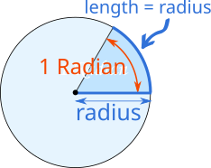
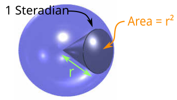
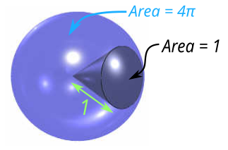
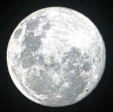

Steradian
A steradian is used to measure "solid angles"
A steradian is related to the surface area of a sphere in the same way a radian is related to the circumference of a circle:
| A Radian "cuts out" a length of a circle's circumference equal to the radius |
 |
|
| A Steradian "cuts out" an area of a sphere equal to (radius)2 |
 |
Sphere vs Steradian
- The surface area of a sphere is 4πr2
- The surface area of a steradian is r2
So a full sphere has a surface area of 4π steradians which is about 12.57 steradians. That means one steradian covers roughly 8% of the sphere.
And because we are measuring angles, it doesn't matter what size the sphere is it will always measure 4π steradians.

Example: The "unit sphere":
- has a radius of 1
- has a surface area of 4π,
- a steradian "cuts out" an area of 1
Radiant Intensity
Radiant intensity (how brightly something shines) can be measured in watts per steradian (W/sr).
Example: You measure the light coming from a powerful globe.
You hold a 50 mm × 50 mm sensor 2 m away and it measures 0.1 Watts.
What is the radiant intensity in W/sr (Watts per steradian)?
- At 2 meters, one steradian covers an area of (2 m)2 = 4 m2
- The sensor is small, so the area of sphere it occupies is about equal to its flat surface area: (0.05 m)2 = 0.0025 m2
- Scale up the measured power: 0.1 W × 4 m20.0025 m2 = 160 W/sr
Square Degrees
Because we can convert from radians to degrees we can also convert from steradians to square degrees (deg2):

Example: The Moon
The Moon's angular diameter is about 0.5°, so it covers:
For small parts of the sky like the Moon, we can treat the curved surface like a flat circle to find its area
That is a tiny fraction of the visible sky, which covers:
It would take about 41,253 deg20.2 deg2 ≈ 210,000 Full Moons to cover the entire sky!